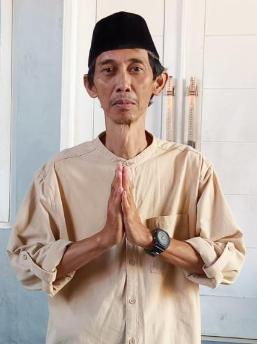
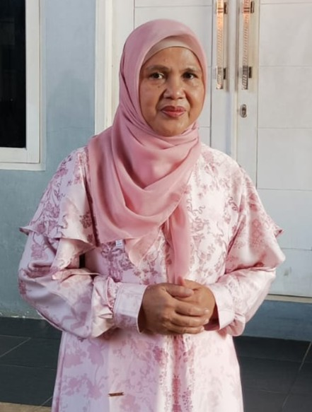
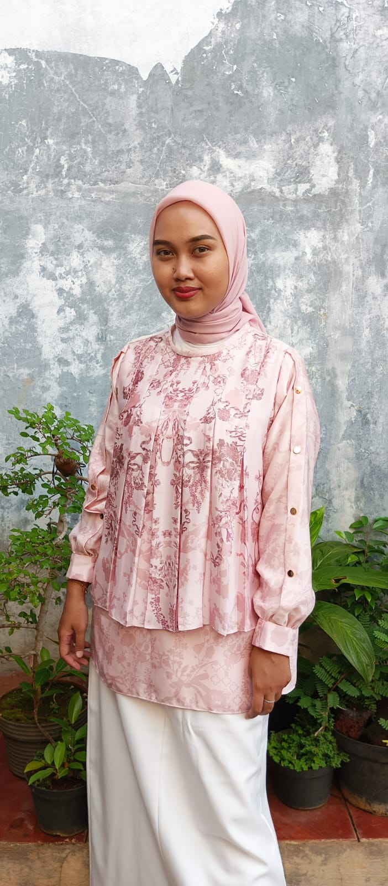

Informasi Keluarga
Ayah
Ayah adalah sosok pekerja keras yang selalu memberikan semangat dan nasihat berharga untuk keluarga. Dedikasi dan kesabarannya menjadi teladan dalam menghadapi setiap tantangan hidup.
Ibu
Ibu adalah sumber kasih sayang yang tak pernah habis. Dengan perhatian dan kehangatannya, Ibu selalu menjaga keharmonisan keluarga dan memberikan dukungan di setiap langkah.
Kakak
Kakak adalah sosok inspiratif yang selalu memberi contoh baik dan motivasi. Keceriaannya membawa suasana positif dalam keluarga, sekaligus menjadi teman berbagi cerita.